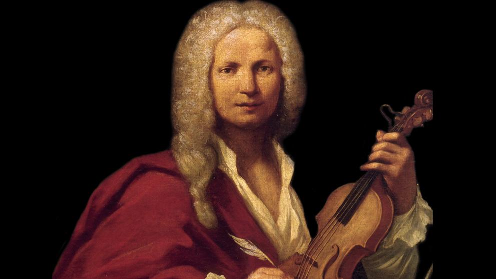

Antonio Vivaldi
Antonio Lucio Vivaldi (4 March 1678 – 28 July 1741) was an Italian Baroque musical composer, virtuoso violinist, teacher, and Roman Catholic priest. Born in Venice, the capital of the Venetian Republic, he is regarded as one of the greatest Baroque composers, and his influence during his lifetime was widespread across Europe. He composed many instrumental concertos, for the violin and a variety of other musical instruments, as well as sacred choral works and more than forty operas. His best-known work is a series of violin concertos known as the Four Seasons. Many of his compositions were written for the all-female music ensemble of the Ospedale della Pietà, a home for abandoned children. Vivaldi had worked there as a Catholic priest for 1 1/2 years and was employed there from 1703 to 1715 and from 1723 to 1740. Vivaldi also had some success with expensive stagings of his operas in Venice, Mantua and Vienna. After meeting the Emperor Charles VI, Vivaldi moved to Vienna, hoping for royal support. However, the Emperor died soon after Vivaldi's arrival, and Vivaldi himself died in poverty less than a year later.
Other works:
"The Four Seasons- Summer- Presto"
"The Four Seasons- Spring"
"The Four Seasons- Autumn"
"Cantate (Cessate, omai cessate)"